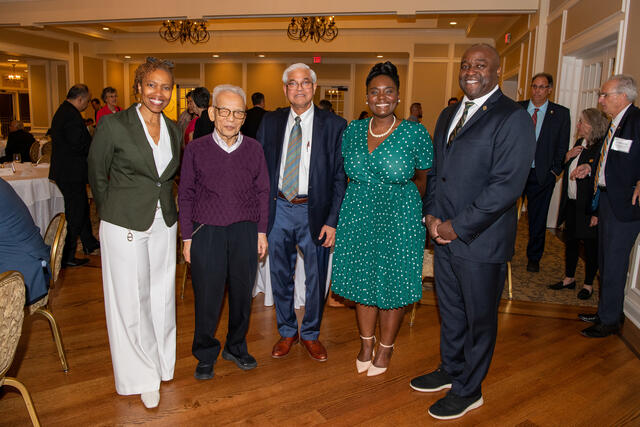

Biography
Ms Alia Wofford is the first recipient of the Shukla PhD Fellowship. Alia hales from North Carolina where she completed a BSc in Biology and Comprehensive Science with a Teaching Licensure at Elizabeth City State University. Alia joined the Climate Dynamics PhD program in Fall 2021, after graduating with an MS in Atmospheric Science from Howard University. Alia has a passion for research, as evidenced by her diverse research experiences leading up to her joining Mason. She has worked on research projects ranging from studying the effects of antimalarial drugs on chick embryos, to studying how dense gas contributes to star formation, to modeling biological methane fluxes in early Earth’s atmosphere. When Alia was a postbaccalaureate research scientist at NASA Goddard Space Flight Center she became interested in planetary atmospheres and oceans and their interaction with life. Her master’s thesis at Howard focused on changes in the Martian dust cycle throughout the planet’s recent geological history. Having now joined the Climate Dynamics PhD program at Mason, she aims to apply her diverse set of knowledge and expertise towards studying Earth’s paelo (which means ancient) climatic history, to improve our understanding of the role that aerosols, such as dust, have played in shaping in the evolution of Earth’s climate and improve our ability to understand and model how Earth's climate will change in the future under global warming.